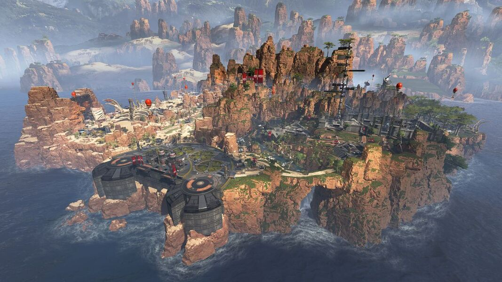
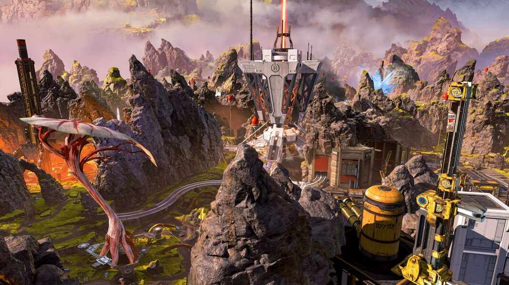
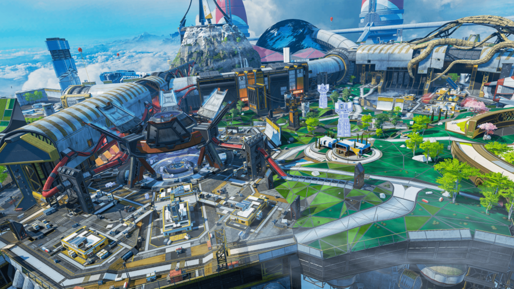
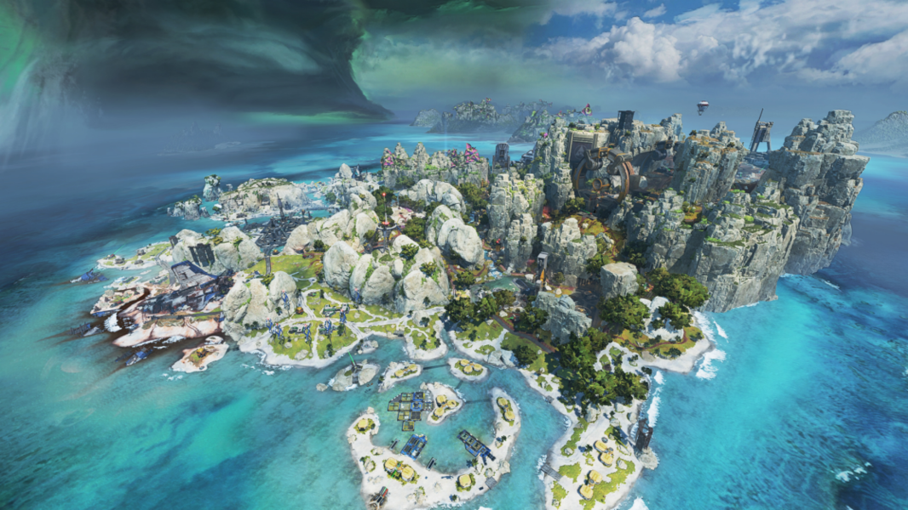

Apex Legends

Apex Legends
CAÑON DE LOS REYES:
La isla denominada Cañón de los Reyes era un simple asentamiento en el planeta Solace que no prosperó hasta que IMC la eligió como centro de investigación y desarrollo. Contaba con una base aérea, una depuradora y un montón de instalaciones para las operaciones de IMC, como un proyecto top secret sobre el funcionamiento de la tecnología de fase o un programa radical para crear un simulacro de ejército activado por un solo cerebro. A primera vista, el Cañón de los Reyes era una sencilla instalación de IMC que, a pesar de los pesares, trajo estabilidad y puestos de trabajo a Solace.
Para relajarse, los soldados de IMC destinados a este lugar competían en combates tipo gladiadores en una zona a la que apodaban «Cúpula del trueno». Años más tarde, cuando el Sindicato eligió al Cañón de los Reyes para celebrar su competición sangrienta, la Cúpula del trueno quedó intacta como tributo al predecesor de los Juegos Apex. La isla ha sufrido muchos cambios desde entonces: un asaltante desconocido derribó la torre repulsora, una explosión subterránea causó el derrumbe de la Cúpula del trueno y Villa calavera y una colisión de naves destruyó los acantilados del extremo norte de la zona. Da igual que cambie: siempre será el primer hogar de los Juegos Apex.
FIN DEL MUNDO:
Talos es un planeta inclemente con una intensa actividad volcánica. Aunque se creía inhabitable, se crearon pequeños asentamientos de luditas. Sin embargo, se convirtió en un hervidero de actividad de IMC cuando se descubrió un preciado compuesto mineral bajo su superficie. Se construyeron torres refrigerantes para enfriar mucho los ríos naturales de lava y permitir la extracción de recursos. Con cierto optimismo, se apodó a las instalaciones que las albergaban «Un nuevo amanecer» y la ciudad de Fin del mundo creció a su alrededor.
Hace unas décadas, la explosión en una de estas torres dejó el área circundante cubierta por una letal nube congeladora instantánea. Fin del mundo quedó abandonada, salvo por unos cuantos habitantes que formaron una pequeña comunidad de cazadores. En tiempos, rechazaban la tecnología moderna, pero vacilantemente volvieron a aceptarla gracias a la guía de su amado héroe local, Bloodhound. Sin embargo, sus ruinas y la tierra rica en energía del planeta atrajeron la atención de dos grupos fundamentales: el Sindicato de mercenarios y Hammond Robotics. Hoy, Fin del mundo es la segunda residencia de los Juegos Apex y un centro operativo clave para Hammond Robotics, que instaló lo último en tecnología de minería moderna, el Recolector planetario, para comenzar su propia extracción de recursos.
OLYMPUS:
Olympus era una ciudad de ensueño, una utopía que flotaba en las nubes sobre Psámate. En este lugar, las mentes más brillantes de las Tierras Salvajes podían reunirse e intercambiar ideas que llevaban a avances en las ciencias y las artes. Sin embargo, un accidente en un laboratorio experimental creó una brecha de fase (una enorme burbuja de energía de fase) y los más brillantes de las Tierras Salvajes abandonaron rápidamente la ciudad. Respaldada por el Sindicato de mercenarios, Hammond Robotics pretendía transformar Olympus en un nuevo escenario para los Juegos Apex.
Pero entonces una nave de la flota Ícaro llevó hasta Olympus un virus letal junto con las implacables enredaderas medusa. Aunque hallaron una cura para el virus, las enredaderas resistieron y mantuvieron la nave varada en la ciudad. Por si aquello fuera poco, se produjo un desastroso intento de trasladar Olympus a una nueva ubicación. La tecnología de fase falló, provocando la caída de la ciudad. Sus estructuras fueron cayendo por todo el terreno a medida que se asentaba. Estos cambios alteraron los Juegos y dieron lugar a nuevos retos para las leyendas.
PUNTO TORMENTA:
Esta isla desierta no siempre estuvo tan desierta. Hermosa y rebosante de recursos, Punto Tormenta fue la principal candidata para las primeras expediciones de IMC al planeta Gaea. Sin embargo, los equipos de asentamiento de IMC no tardaron en descubrir las intensas tormentas tropicales que azotan la isla. Así, se estableció un asentamiento permanente cerca, en la ciudad de Suotamo. La ciudad crecía e IMC construyó atrapatormentas en Punto Tormenta para generar la energía necesaria.
Cuando la IMC se retiró de las Tierras Salvajes, los atrapatormentas empezaron a deteriorarse. En Punto Tormenta solo quedaron unos cuantos recursos y un atrapatormentas funcional, que sus ingenuos habitantes decidieron desmontar. La ausencia de atrapatormentas empeoró las tormentas cercanas, que se apoderaron de la isla. Posteriormente, un estudio de la zona reveló la existencia de asentamientos desconocidos, pero ningún superviviente. La isla quedó abandonada durante muchos años, salvo por el ocasional carroñero o pirata, hasta que llamó la atención del Sindicato de mercenarios. Conocían la existencia de tecnología antigua de IMC y sabían de la peligrosa fauna de Punto Tormenta, pero no lo letal que sería la isla hasta que el estruendo de una descomunal bestia marina activó las viejas defensas de IMC. Ahora, los espectros recorren unas armerías de IMC cargadas para ofrecer un nuevo reto a los competidores de los Juegos Apex.